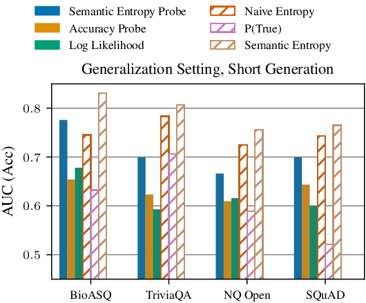

Semantic Entropy Probes: Robust and Cheap Hallucination Detection in LLMs
Original paperFull text with figures and references
Example overviewWritten for this design preview
A cheaper estimate of semantic uncertainty
Semantic entropy compares several model responses by meaning. That makes it useful for detecting some hallucinations, but it requires several generations for each question.
This paper trains a linear probe to estimate semantic entropy from a single generation's hidden states. The extra sampling happens when creating the probe's training labels, rather than every time the probe is used.

What to check while reading
The target is semantic entropy, not a direct probability that the answer is correct. Compare the probe with both accuracy probes and methods that sample multiple answers. Check which models, tasks, and distribution shifts each result covers.
Chat previewNo AI service connected
Read with a question in mind.
Try the example question to see how a reply links back to the original passage.